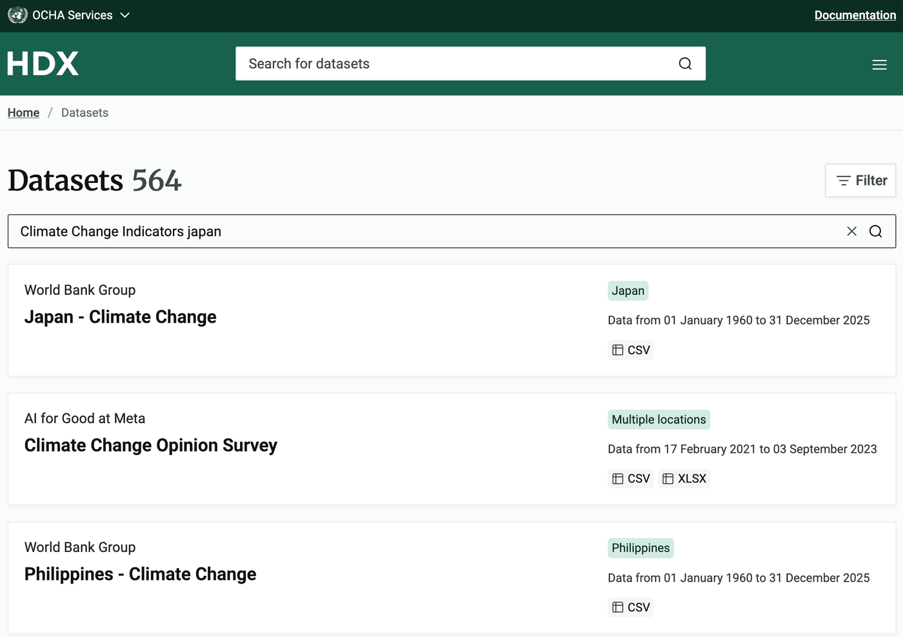

決定你要研究的國家 約 5 分鐘
這一課你要探索自己的資料，做的事和前幾課一樣，只是提示比較少。卡住的時候，回去看第二～四課，通常就能找到下一步的線索。
前三課都用巴西，這次鼓勵你挑一個新的國家：可以是你住的國家、家人來自的國家，或你很想去旅行的國家。
找到並下載你的國家的資料
每個國家在 HDX 上都有自己的資料頁。輸入國家的英文名稱，按「產生連結」，再點連結到 HDX 下載：
- 網址的格式是
https://data.humdata.org/dataset/world-bank-climate-change-indicators-for-國名，國名用世界銀行的英文寫法，全部小寫、空白換成連字號，例如japan、viet-nam、philippines、indonesia；南韓是korea-rep。 - 如果連結打不開，就到 HDX 首頁搜尋「Climate Change Indicators」加國名，輸入完要按 Enter（搜尋框下面跳出來的 Location、Organisation 建議不要點，那不是資料集），在結果頁選 World Bank Group 提供的「國名 - Climate Change」那一筆（下圖以日本為例）。
- 進到國家的資料頁後，往下捲到 Data and resources，在 Climate Change Indicators for 國名 那一格按右下角藍色的 Download。檔名會像
climate-change_abc.csv，abc 是國家代碼。 - 世界銀行的資料庫裡沒有台灣，想研究台灣的同學可以改選氣候條件相近的國家，例如日本、菲律賓。

① 在 HDX 搜尋，點進 World Bank Group 的「國名 - Climate Change」（上圖以日本為例）

② 在國家的資料頁往下捲到 Data and resources，按右下角藍色的 Download（上圖以巴西為例）
上傳你的國家的 CSV
- 你選了哪個國家？為什麼？寫在學習單上。
把資料整理成資料表 約 5 分鐘
和第二課一樣：刪掉用不到的欄位、重新排成「一年一列」，再把缺失 60% 以上的欄位刪掉。忘了為什麼要這樣做，可以回去看第二課。
刪掉缺失 60% 以上的欄位
選出三個有趣的欄位 約 15 分鐘
先列出所有欄位，點進去看看資料（也可以只看某幾年），挑一個最有興趣的當「欄位 1」。接著再挑兩個：可以直接挑你有感覺的，也可以像第二課一樣看相關係數。
記得：有些欄位和你的欄位高度相關，只是因為它們量的是同一件或很像的事。盡量挑量的是不同東西、但彼此相關的欄位。
你選的三個欄位
- 你選了哪三個欄位？為什麼？寫在學習單上。
清理你的資料 約 10 分鐘
只留下你選的三個欄位，再刪掉任何有空白的年份。步驟和第二課一樣。
- 分享你為什麼選這個國家。
- 你有興趣研究什麼？你為什麼選這些資料欄位？
- 你認為可能會發現什麼？
自由探索 約 20 分鐘
先看看你整理好的整個資料框，也可以只看某些欄位、某幾年（第二課教過的方法）。然後用第三課學到的折線圖、散布圖，試試不同的顏色和圖表類型，找出最能呈現你感興趣的資料的畫法。
畫圖
- 在資料框中查看你的資料，把資料畫成折線圖和散布圖。你看到了什麼？記在學習單上。
延伸：預測模型 約 15 分鐘
想要的話，可以拿預測模型來試試看；如果你比較想把時間花在做要分享的圖表，也可以跳過這一步。
先替你的三個欄位都做線性迴歸，再做支援向量迴歸，做法和第四課一樣。別忘了 SVR 要先標準化，預測完再換回原本的單位（這裡會自動幫你做）。
- 評估你的迴歸模型：它們有好好代表你的資料嗎？你猜為什麼有、或為什麼沒有？
- 這些預測告訴你什麼？你相信它們嗎？為什麼？
分享你的探索成果 約 10 分鐘
做得好！找一位同學，分享你對資料的初步想法和問題。第六課要用這些成果來說故事，記得把整理好的資料、圖表和筆記存下來。
- 你探索的資料中，有沒有令人困惑或出乎意料的地方？
- 你的探索結果符合你原本的假設嗎（如果有的話）？
- 你從探索中學到了什麼？
- 有沒有發現什麼有趣、但很難解釋的模式？有沒有你無法解釋的資料？
- 資料的哪個部分最讓你想繼續探索？
📄 整理好的資料
第六課可以再用，也可以用 Excel 打開。
📈 我的圖表
在「自由探索」「延伸：預測」的每張圖下方按「存成圖片」，就能貼進簡報或影片。